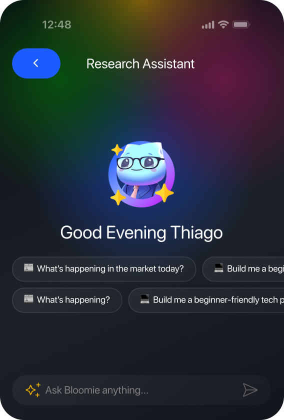

<template id="beat-2-feature-template">
  <div
    data-composition-id="beat-2-feature"
    data-width="1080"
    data-height="1920"
    data-start="0"
    data-duration="5.28"
  >
    <div class="b2-scene">
      <div class="b2-glow"></div>

      

      
      

      <div class="b2-badge-stack">
        <div class="b2-badge" id="b2-badge-1"><span class="b2-text">BITE-SIZE&nbsp;LESSONS</span></div>
        <div class="b2-badge" id="b2-badge-2"><span class="b2-text">REAL&nbsp;STOCKS</span></div>
        <div class="b2-badge" id="b2-badge-3"><span class="b2-text">ZERO&nbsp;JARGON</span></div>
      </div>
    </div>

    <style>
      [data-composition-id="beat-2-feature"] {
        position: absolute;
        inset: 0;
        width: 1080px;
        height: 1920px;
        overflow: hidden;
        background: #ffffff;
        font-family: "Inter Tight", "Inter", system-ui, sans-serif;
      }
      [data-composition-id="beat-2-feature"] .b2-scene {
        position: absolute;
        inset: 0;
        width: 100%;
        height: 100%;
      }
      [data-composition-id="beat-2-feature"] .b2-glow {
        position: absolute;
        top: 400px;
        left: 50%;
        margin-left: -520px;
        width: 1040px;
        height: 1040px;
        border-radius: 50%;
        background: radial-gradient(
          circle at center,
          rgba(1, 205, 116, 0.12) 0%,
          rgba(1, 205, 116, 0.04) 40%,
          rgba(1, 205, 116, 0) 72%
        );
        z-index: 0;
        pointer-events: none;
      }
      [data-composition-id="beat-2-feature"] .b2-logo {
        position: absolute;
        top: 96px;
        left: 96px;
        width: 112px;
        height: 112px;
        z-index: 4;
        object-fit: contain;
      }
      [data-composition-id="beat-2-feature"] .b2-phone {
        position: absolute;
        object-fit: contain;
        filter: drop-shadow(0 36px 80px rgba(25, 33, 61, 0.18));
      }
      [data-composition-id="beat-2-feature"] .b2-phone-learn {
        top: 380px;
        right: -60px;
        width: 620px;
        z-index: 3;
        transform-origin: 50% 50%;
      }
      [data-composition-id="beat-2-feature"] .b2-phone-ask {
        top: 520px;
        right: 360px;
        width: 420px;
        z-index: 2;
        transform-origin: 50% 50%;
        opacity: 0.95;
      }
      [data-composition-id="beat-2-feature"] .b2-badge-stack {
        position: absolute;
        top: 1280px;
        left: 80px;
        display: flex;
        flex-direction: column;
        gap: 32px;
        z-index: 5;
      }
      [data-composition-id="beat-2-feature"] .b2-badge {
        display: inline-flex;
        align-items: center;
        justify-content: center;
        background: #1c2329;
        color: #ffffff;
        padding: 28px 52px;
        border-radius: 24px;
        box-shadow: 0 22px 54px rgba(25, 33, 61, 0.22);
        align-self: flex-start;
      }
      [data-composition-id="beat-2-feature"] .b2-text {
        font-family: "Inter Tight", "Inter", system-ui, sans-serif;
        font-weight: 800;
        font-style: italic;
        font-size: 88px;
        line-height: 0.95;
        letter-spacing: -0.012em;
        text-transform: uppercase;
        color: #ffffff;
        white-space: nowrap;
      }
    </style>

    <script>
      (function () {
        const tl = gsap.timeline({ paused: true });
        const sel = function (s) {
          return '[data-composition-id="beat-2-feature"] ' + s;
        };

        // --- Background flash-in (stand-in for transition from previous beat) ---
        tl.from(
          '[data-composition-id="beat-2-feature"]',
          { backgroundColor: "#1658ff", duration: 0.3, ease: "power2.out" },
          0
        );

        // --- Radial green glow: slow breathe ---
        tl.from(
          sel(".b2-glow"),
          { opacity: 0, scale: 0.9, duration: 0.5, ease: "power2.out" },
          0
        );
        tl.to(
          sel(".b2-glow"),
          {
            scale: 1.05,
            duration: 2.3,
            ease: "sine.inOut",
            yoyo: true,
            repeat: 1,
          },
          0.5
        );

        // --- Bloom logo: fade in top-left at beat start, subtle y float ---
        tl.from(
          sel(".b2-logo"),
          { y: -30, opacity: 0, duration: 0.5, ease: "power3.out" },
          0.15
        );
        tl.to(
          sel(".b2-logo"),
          {
            y: 4,
            duration: 2.3,
            ease: "sine.inOut",
            yoyo: true,
            repeat: 1,
          },
          0.7
        );

        // --- Secondary phone (ask) slides up + tilts into rest — enters first, behind main ---
        tl.fromTo(
          sel(".b2-phone-ask"),
          { y: 220, opacity: 0, rotation: 18, scale: 0.92 },
          {
            y: 0,
            opacity: 0.95,
            rotation: 10,
            scale: 1,
            duration: 0.8,
            ease: "power3.out",
          },
          0.05
        );

        // --- Main phone (learn) slides up + tilts — staggered 0.35s after ---
        tl.fromTo(
          sel(".b2-phone-learn"),
          { y: 280, opacity: 0, rotation: -16, scale: 0.9 },
          {
            y: 0,
            opacity: 1,
            rotation: -8,
            scale: 1,
            duration: 0.85,
            ease: "power3.out",
          },
          0.35
        );

        // --- Continuous Ken Burns zoom on both phones ---
        tl.to(
          sel(".b2-phone-learn"),
          { scale: 1.04, duration: 4.0, ease: "sine.inOut" },
          1.0
        );
        tl.to(
          sel(".b2-phone-ask"),
          { scale: 1.035, duration: 4.0, ease: "sine.inOut" },
          1.1
        );

        // --- Badge 1: "BITE-SIZE LESSONS" — VO word "bite-size" @ 1.162s ---
        tl.fromTo(
          sel("#b2-badge-1"),
          { x: -100, scale: 1.15, opacity: 0, rotation: -2 },
          {
            x: 0,
            scale: 1,
            opacity: 1,
            rotation: 0,
            duration: 0.32,
            ease: "power3.out",
          },
          1.162
        );

        // --- Badge 2: "REAL STOCKS" — VO word "Real" @ 3.077s ---
        tl.fromTo(
          sel("#b2-badge-2"),
          { x: -100, scale: 1.15, opacity: 0, rotation: -2 },
          {
            x: 0,
            scale: 1,
            opacity: 1,
            rotation: 0,
            duration: 0.32,
            ease: "power3.out",
          },
          3.077
        );

        // --- Badge 3: "ZERO JARGON" — VO word "Zero" @ 4.180s ---
        tl.fromTo(
          sel("#b2-badge-3"),
          { x: -100, scale: 1.15, opacity: 0, rotation: -2 },
          {
            x: 0,
            scale: 1,
            opacity: 1,
            rotation: 0,
            duration: 0.32,
            ease: "power3.out",
          },
          4.180
        );

        // --- Earlier badges fade slightly as newer ones slam, keeping current in focus ---
        tl.to(sel("#b2-badge-1"), { opacity: 0.55, duration: 0.25 }, 3.077);
        tl.to(sel("#b2-badge-2"), { opacity: 0.55, duration: 0.25 }, 4.180);

        window.__timelines = window.__timelines || {};
        window.__timelines["beat-2-feature"] = tl;
      })();
    </script>
  </div>
</template>
